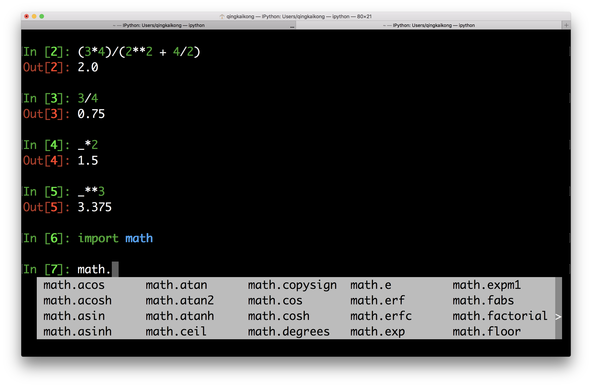

Python as a Calculator
Contents
Table of Contents

This notebook contains an excerpt from the Python Programming and Numerical Methods - A Guide for Engineers and Scientists, the content is also available at Berkeley Python Numerical Methods.
The copyright of the book belongs to Elsevier. We also have this interactive book online for a better learning experience. The code is released under the MIT license. If you find this content useful, please consider supporting the work on Elsevier or Amazon!
< 1.1 Getting Started with Python | Contents | 1.3 Managing Packages >
Python as a Calculator¶
We will introduce you to Python by demonstrating features found in any standard graphing calculator. An arithmetic operation is either addition, subtraction, multiplication, division, or powers between two numbers. An arithmetic operator is a symbol that Python has reserved to mean one of the aforementioned operations. These symbols are + for addition, - for subtraction, * for multiplication, / for division, and ** for exponentiation.
We say an instruction or operation is executed when it is resolved by the computer. An instruction is executed at the command prompt by typing it where you see the >>> symbol in the Python shell (or In [1]: sign in Ipython) and then pressing Enter. Or type it in the code cell in Jupyter notebook and pressing Shift + Enter. Since we will use Jupyter notebook for the rest of the book, here we will show all the examples in Ipython shell (Python shell is similar), so that you can familiar with different options.
TRY IT! Compute the sum of 1 and 2.
In [1]: 1 + 2
Out[1]: 3
An order of operations is a standard order of precedence that different operations have in relationship to one another. Python utilizes the same order of operations that you learned in grade school. Powers are executed before multiplication and division, which are executed before addition and subtraction. Parentheses, (), can also be used in Python to supersede the standard order of operations.
TRY IT! Compute \(\frac{3*4}{(2^2+4/2)}\).
In [2]: (3*4)/(2**2 + 4/2)
Out[2]: 2.0
TIP! You may have noticed Out[2] is the resulting value of the last operation executed. You can use _ symbol to represent this result to break up complicated expressions into simpler commands.
TRY IT! Compute 3 divided by 4, then multiply the result by 2, and then raise the result to the 3rd power.
In [3]: 3/4
Out[3]: 0.75
In [4]: _*2
Out[4]: 1.5
In [5]: _**3
Out[5]: 3.375
Python has many basic arithmetic functions like sin, cos, tan, asin, acos, atan, exp, log, log10 and sqrt stored in a module (We will explain it later in this chapter) called math. We can import this module first to get access to these functions.
In [6]: import math
TIP! In Jupyter notebook and Ipython, you can have a quick view of what’s in the module by type the module name + dot + TAB. Furthermore, if you type the first few letters of the function and press TAB, it could automatically complete the function for you, the so called - TAB completion.

The way we use these mathematical functions is module.function, the inputs to them are always placed inside of parentheses that are connected to the function name. For trigonometric functions, it is useful to have the value of \(\pi\) available. You can call this value at any time by typing math.pi in the code cell. Note that the value of \(\pi\) is stored in Python to 16 digits.
TRY IT! Find the square root of 4.
In [7]: math.sqrt(4)
Out[7]: 2.0
TRY IT! Compute the \(sin(\frac{\pi}{2})\).
In [8]: math.sin(math.pi/2)
Out[8]: 1.0
Python will compose functions as you would expect, with the innermost function being executed first. The same holds true for function calls that are composed with arithmetic operations.
TRY IT! Compute \(e^{log10}\).
In [9]: math.exp(math.log(10))
Out[9]: 10.000000000000002
Note that the log function in Python is \(log_e\), or the natural logarithm. It is not \(log_{10}\). If you want to use \(log_{10}\), you need to use math.log10.
TIP! You can see the result above should be 10, but it is showing 10.000000000000002, this is due to Python’s number approximation, which we will learn more in chapter 9.
TRY IT! Compute \(e^\frac{3}{4}\)
In [10]: math.exp(3/4)
Out[10]: 2.117000016612675
TIP! Using the UP ARROW in the command prompt recalls previous commands that were executed. If you accidentally type a command incorrectly, you can use the UP ARROW to recall it, and then edit it instead of retyping the entire line.
Many times, when you use a function in Python, you want to get some help on the context of the function. In Ipython or Jupyter notebook you can view the description of any function by typing function?, that is the question mark is a shortcut to get help. If you see a function you are unfamiliar with, it is good practice to use the question mark before you asking your instructors what a specific function does.
WARNING! For some functions, the help file can be extremely complicated and wordy, even for simple functions. In these cases, do not be afraid to ask your instructor for help.
TRY IT! Use the question mark to find the definition of the factorial function
In [11]: math.factorial?
Signature: math.factorial(x, /)
Docstring:
Find x!.
Raise a ValueError if x is negative or non-integral.
Type: builtin_function_or_method
Python will raise an ZeroDivisionError when you have expression 1/0, which is infinity, to remind you.
In [12]: 1/0
---------------------------------------------------------------------------
ZeroDivisionError Traceback (most recent call last)
<ipython-input-12-9e1622b385b6> in <module>()
----> 1 1/0
ZeroDivisionError: division by zero
You can type math.inf at the command prompt to denote infinity or math.nan to denote something that is not a number that you wish to be handled as a number. If this is confusing, this distinction can be skipped for now; it will be explained more clearly when it becomes important. Finally, Python can also handle the imaginary number.
TRY IT! \(1/\infty\), and \(\infty*2\) to verify that Python handles infinity as you would expect.
In [13]: 1/math.inf
Out[13]: 0.0
In [14]: math.inf * 2
Out[14]: inf
TRY IT! Compute \(\infty/\infty\)
In [15]: math.inf/math.inf
Out[15]: nan
TRY IT! Compute sum 2 + 5i
In [16]: 2 + 5j
Out[16]: (2+5j)
Note that, in Python imaginary part is using j instead of i to represent.
Another way to represent complex number in Python is to use the complex function.
In [17]: complex(2,5)
Out[17]: (2+5j)
Python can also handle scientific notation using the letter e between two numbers. For example, \(1e6=1000000\) and \(1e-3=0.001\).
TRY IT! Compute the number of seconds in 3 years using scientific notation.
In [18]: 3e0*3.65e2*2.4e1*3.6e3
Out[18]: 94608000.0
TIP! Every time when we type the function in math module, we always type math.function_name. Alternatively, there is a simpler way, for example, if we want to use sin and log from math module, we could import them this way: from math import sin, log. Then you all you need to do when using these functions is using them directly, for example, sin(20) or log(10).
Basic Data Types¶
We just learned to use Python as a calculator to deal with different data values. In Python, there are a few data types we need to know, for numerical values, int, float, and complex are the types associated with the values.
int: Integers, such as 1, 2, 3, …
float: Floating-point numbers, such as 3.2, 6.4, …
complex: Complex numbers, such as 2 + 5j, 3 + 2j, …
You can use function type to check the data type for different values.
TRY IT! Find out the data type for 1234.
In [19]: type(1234)
Out[19]: int
TRY IT! Find out the data type for 3.14.
In [20]: type(3.14)
Out[20]: float
TRY IT! Find out the data type for 2 + 5j.
In [21]: type(2 + 5j)
Out[21]: complex
Of course, there are other different data types, such as boolean, string and so on, we will introduce them later in the book.
In this section, we talked about how to use Python as a calculator by running commands in the Python shell. Let’s go ahead to learn more about the managing packages, i.e. how to install, upgrade, and remove the packages before we do more coding.
< 1.1 Getting Started with Python | Contents | 1.3 Managing Packages >